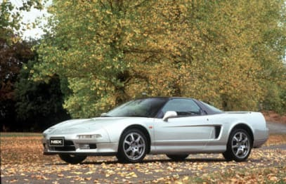
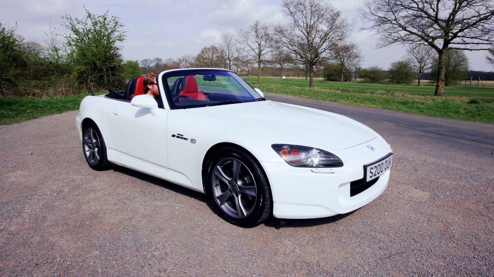

The Honda NSX is a JDM legend because it was the first Japanese "supercar."
Its styling was bold and resembled a fighter jet. Many consumers were surprised that Honda decided to make this car in the first place
If the name "Honda NSX" does not sound familiar to you, that is because it is called the "Acura NSX" in the United States
Acura is the luxury brand for Honda that is only used in North America.

The Honda S2000, commonly refered to as the "S2k," is the only other rear wheel drive car to come from Honda besides the NSX.
It was made to compete with the likes of the Mazda Miata and the Toyota MR2.